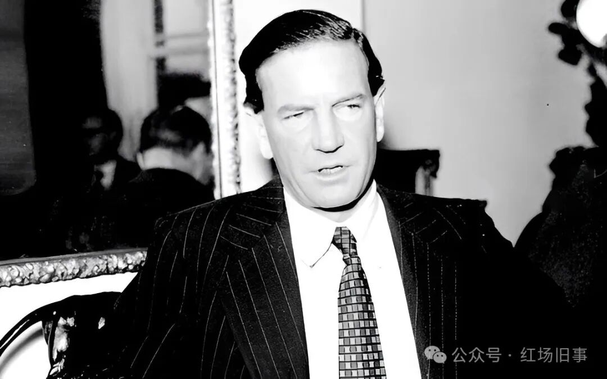
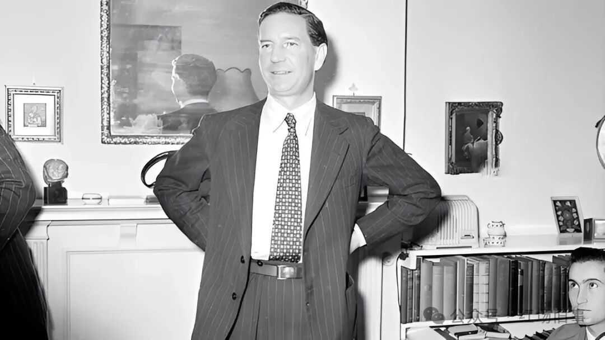
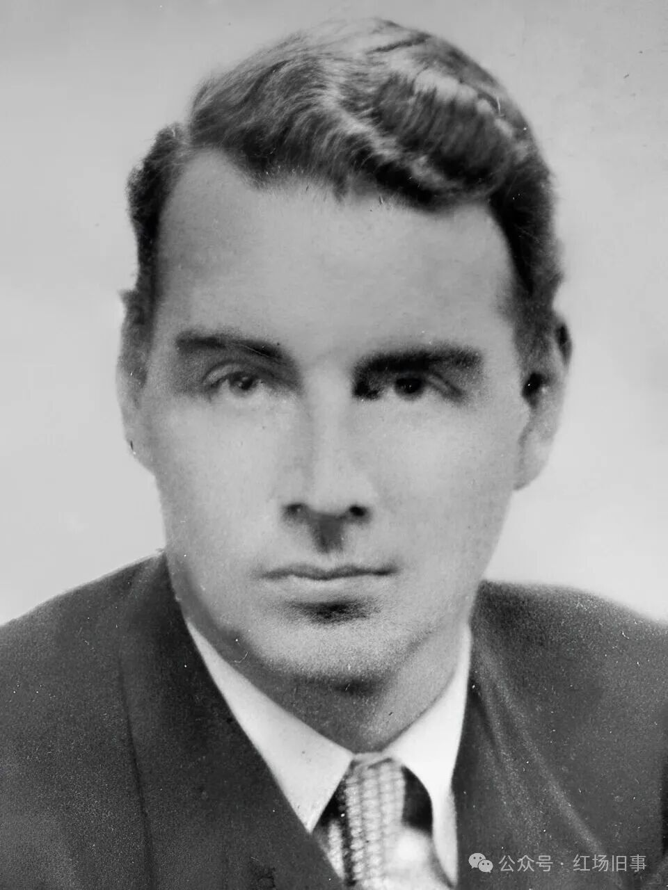

一、摄政公园的黄昏
1934年6月的一个傍晚，伦敦摄政公园的树影被夕阳拉得很长。一个26岁的年轻人坐在长椅上，神情略显紧张。他叫金·菲尔比，出身英国伯爵家庭，刚从剑桥毕业不久。几分钟前，妻子丽兹告诉他：“去见一个人，一个‘具有决定重要性的人’。”

一个男子从暮色中走来。他三十出头，戴着眼镜，举止温文尔雅，开口却是一口带着维也纳口音的英语。“你喜欢巴黎吗？”陌生人问。菲尔比点点头。“我也喜欢。”陌生人笑了，目光投向远处的树梢，“那里有最好的咖啡馆，最美的林荫道。伦敦太沉闷了。”他们像两个普通的知识分子一样聊了很久——聊欧洲的局势，聊法西斯的威胁，聊西班牙内战的硝烟。
直到天色完全暗下来，陌生人才起身告辞。临别时，他轻声说：“我们需要你。”多年后，菲尔比在军情五处的档案里看到了这个人的照片，才知道他的名字：阿诺德·多伊奇。而在那一天，他只知道自己将称呼这个人为“奥托”。他不知道的是，这个黄昏，成了他此后三十年双重人生的起点。
二、“奥托”的真实身份
阿诺德·多伊奇，1903年生于维也纳，24岁获得政治学博士学位，主修性心理学，是 Wilhelm Reich 学派的追随者。1934年，他以“伦敦大学心理学研究生”的身份来到英国。没有人怀疑这个文质彬彬的学者。但在他温和的外表下，藏着另一个身份：苏联国家政治保卫总局（OGPU，克格勃前身）的“非法特工”。
所谓“非法”，意味着他没有外交身份掩护，一旦暴露，没有任何豁免权。多伊奇的上级给他下达了一个明确的任务：在剑桥大学里，找到那些“出身富有、前途光明”的大学生，把他们培养成莫斯科的眼睛。为什么要找富家子弟？因为只有这些人，未来才能进入英国政坛的核心——外交部、情报局、政府机要部门。而那个年代的剑桥，恰好聚集了一群这样的人。
他们目睹经济大萧条席卷欧洲，眼睁睁看着法西斯主义在德国、意大利、西班牙崛起。在他们眼中，英国政府的绥靖政策软弱无力，而莫斯科，是唯一敢于向法西斯亮剑的力量。多伊奇要做的，就是找到这些理想主义者，然后——把他们变成间谍。
三、第一颗棋子落下
菲尔比不是多伊奇找到的第一个人，却是最关键的一个。1933年，菲尔比在维也纳就已接触到共产主义思想。他亲眼目睹了工人与警察的流血冲突，帮助过被追捕的反法西斯人士。当他带着新婚妻子丽兹回到伦敦时，早已是苏联情报机构眼中的“潜在目标”。

丽兹本人就是奥地利共产党员。1934年5月，她通过地下渠道联系上多伊奇，把自己的丈夫推荐了出去。摄政公园会面后，多伊奇开始亲自训练这个新人。他教菲尔比如何安排一场秘密会面，在哪里留言不会被发现，如何识别街上的盯梢者，以及被发现后如何甩掉他们。“从今天起，你必须断绝与所有共产党人的公开联系。”多伊奇说，“你要成为一个右翼分子，甚至是一个纳粹同情者。”
菲尔比照做了。他与妻子丽兹办理了表面上的离婚（尽管两人仍同居），开始出入右翼圈子，甚至一度前往西班牙，名义上是采访佛朗哥政权，实际上是为莫斯科收集情报。他完美地隐藏了自己。
四、草坪下的种子
1934年的剑桥大学，三一学院的草坪上，几个年轻人正热烈地讨论着什么。盖伊·伯吉斯，1910年出生，父亲是海军军官，母亲出身豪门。他才华横溢，言辞犀利，是校园里的风云人物，也是地下组织“剑桥传道者”的活跃成员。这个组织聚集了一批坚定的反法西斯主义者，他们相信——只有苏联才能拯救世界。

盖伊·伯吉斯唐纳德·麦克林，1915年出生，父亲是自由党内阁成员、教育委员会主席。他在中学时就接触了共产主义思想，进入剑桥后，与伯吉斯成了挚友，两人经常彻夜讨论时政。1933年秋天，也就是多伊奇抵达伦敦之前，伯吉斯和麦克林就已经被苏联情报机构秘密招募。他们是“五杰”中最早加入的两人。1934年6月，麦克林以优异成绩通过剑桥毕业考试。
第二年10月，他踏入外交部的大门，成为“五杰”中第一个打入英国政权核心的人。与此同时，菲尔比开始向多伊奇推荐自己的朋友们。伯吉斯又去劝说他在剑桥的同事——安东尼·布伦特，一位年轻的艺术史学者。布伦特后来成为女王艺术顾问，可以自由出入白金汉宫。最后一个加入的，是约翰·克恩克罗斯，1937年4月9日被布伦特推荐给多伊奇。
他后来进入英国政府通讯密码学校，在库尔斯克会战中发挥了至关重要的作用。五个人，就这样在1930年代的剑桥草坪下，埋下了种子。
五、不是为了钱，他们为何甘愿冒此大险？
历史档案给出了清晰的答案：不是为了金钱。“剑桥五杰”出身英国资产阶级豪门，如果只是为了钱，他们本可以过着优渥而安稳的生活。但他们选择了另一条路，一条充满风险、一旦暴露就将身败名裂的路。克格勃的档案记录显示，他们几乎拒绝了所有报酬。唯一的例外是克恩克罗斯，他在库尔斯克会战前提供了关键情报，被授予100英镑的奖励和红旗勋章，那已是战后多年的事了。
他们是信仰者。在那个年代，共产主义在他们眼中，是唯一能够对抗法西斯主义的力量。当英国政府向希特勒献媚，当法国在德国铁蹄下沦陷，他们把希望寄托在莫斯科。这个信念，支撑他们走过了二十年。
尾声
1937年9月，多伊奇被召回莫斯科。他躲过了大清洗的子弹，后来在二战期间被派往海外执行任务。关于他的最终命运，至今没有定论——有人说他跳伞进入奥地利时被纳粹捕获枪决，有人说他乘坐的轮船被德军潜艇击沉，葬身大西洋。而他亲手埋下的五颗种子，正在英国权力的土壤里，悄然生长。他们中的一人，将在几年后当上军情六处专门对付苏联的部门的负责人；另一人，将把丘吉尔与罗斯福的通信源源不断地送往莫斯科；还有一人，将在女王身边隐藏三十余年。
但这一切，都是后话了。1934年的那个黄昏，摄政公园的长椅上，一个年轻人只是点了点头。他不知道这个点头意味着什么，也不知道自己会在三十年后，对着前来质询的老友说出那句话：“如果人生能够重来一次，我可能还是会作出同样的选择。”
【互动留言】
如果你是1934年的剑桥学生，亲眼目睹法西斯主义的肆虐，而你的祖国却在向希特勒献媚，你会选择什么立场？欢迎在评论区留下你的思考。下期，我们将跟随金·菲尔比走进军情六处的核心——看看那个“差点当上局长”的男人，如何在二战中改变了一场战役的结局。
原文与配图版权归作者所有。排版根据抓取内容整理，原文请见上方链接。